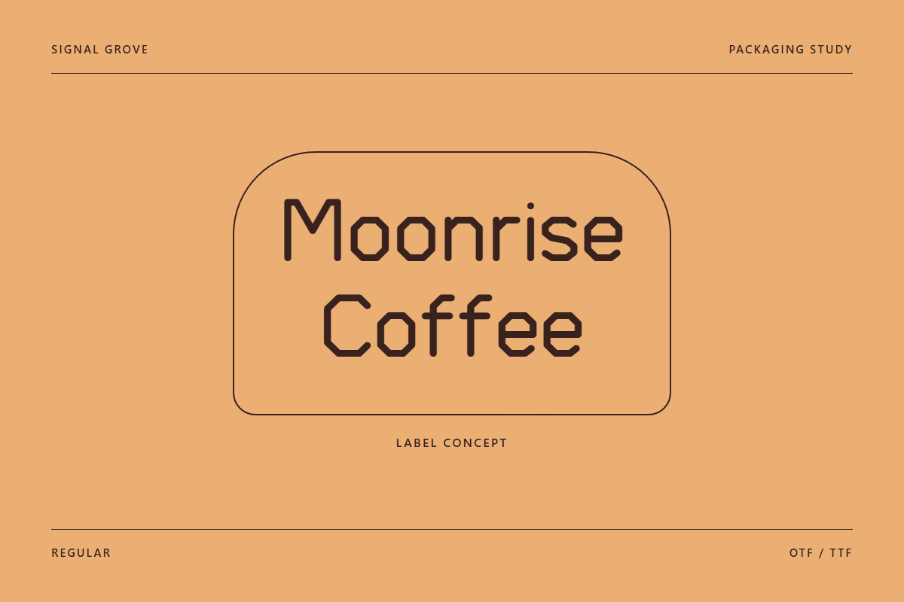
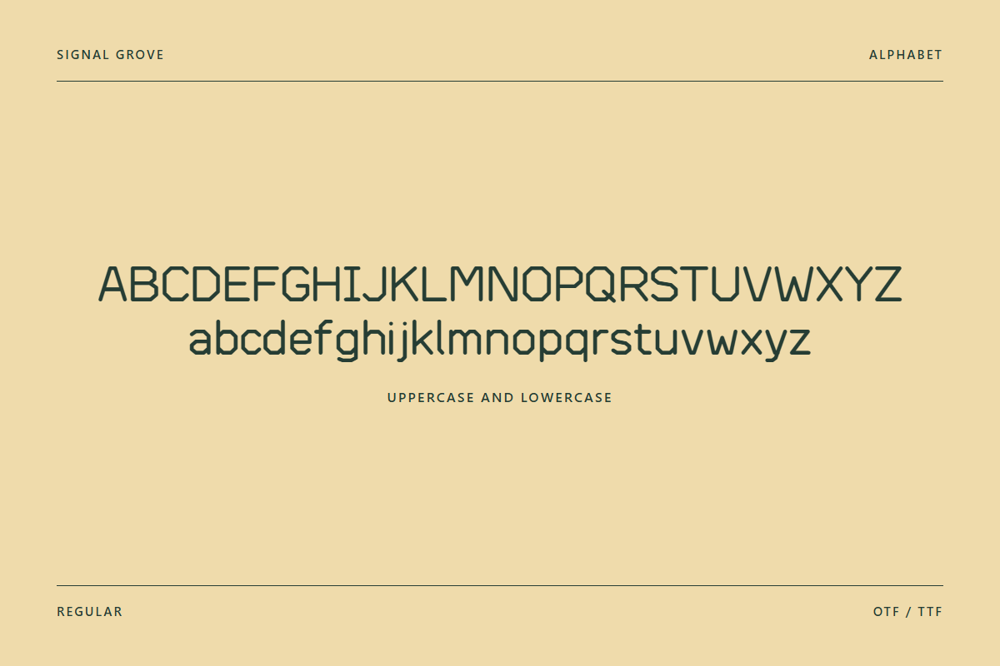
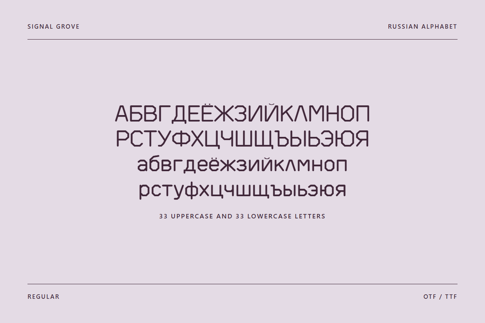
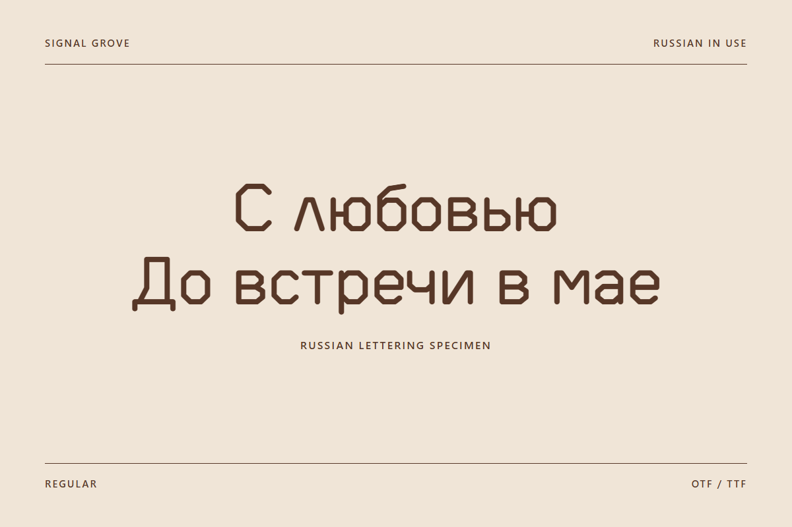
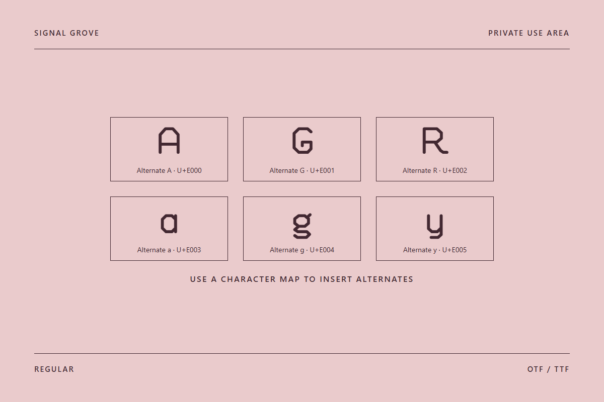
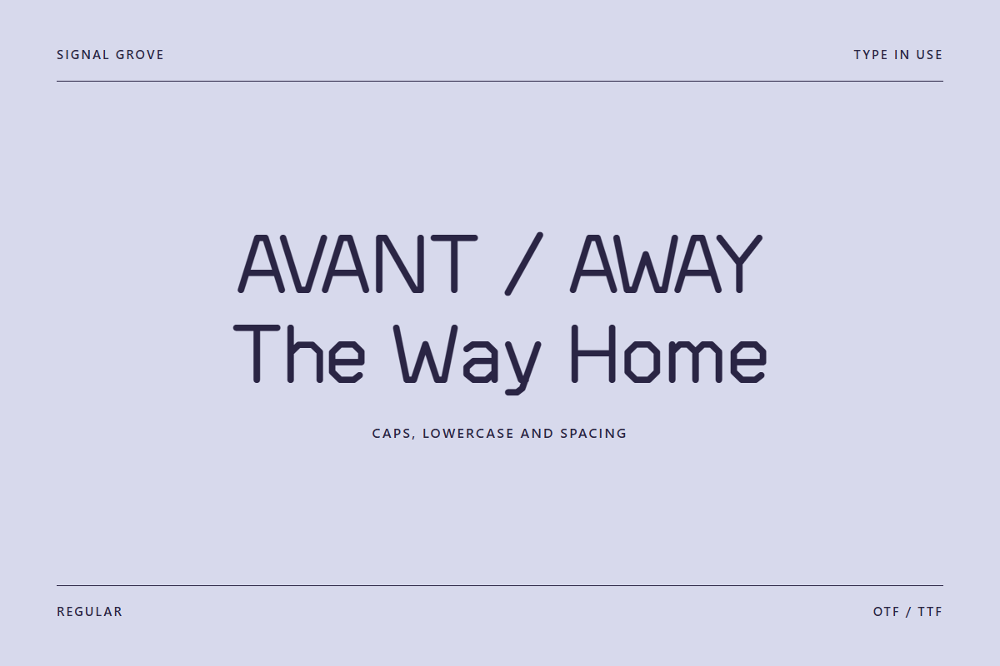

← All typefacesType specimen
Signal Grove in use
Packaging and signage concepts, followed by the alphabet, figures and alternate forms.









Packaging and signage concepts, followed by the alphabet, figures and alternate forms.





